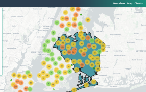
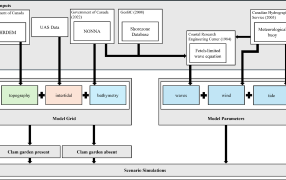
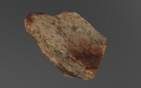

As part of a team of MS and PhD students with interests in ecology mapping and monitoring tools, I helped develop a Web Application for visualizing and tracking the data collected through New York City’s Tree Census program. The WebMap allows users to visualize and compare the datasets in a way that encourages increased public access and engagement. The WebMap was also used by the team as a means for demonstrating Web Application Development and Mapping competency and capability.
Web Application
I used drone-captured imagery to develop 3-D Structure from Motion (SfM) models of a section of the coastline in British Columbia, Canada. I created the models using a personalized local workflow within Agisoft Metashape. I used the models for grid creation within the XBEACH 2-D numerical model. I retrieved additional datasets for simulating a series of weather events with varying intensity in the coastal environment. This project was completed as my masters thesis at Washington State University. NOTE: Access to the full thesis and methods is currently restricted for data protection of involved parties, but a link will be updated upon its release to the public. The thumbnail above is an overview of the workflow developed for informing XBEACH simulations.
Thesis
I captured images of various artifacts and cultural material as part of the development of Appalachian State University’s first virtual exhibit to increase public access to educational resources during the height of the Covid-19 pandemic. I used Agisoft PhotoScan (now Metashape) to develop 3-D models of material culture for the exhibit’s AR and VR interaction compatibility. All developed models are also available for individual visualization through Sketchfab. In addition to photogrammetric model generation, I developed the virtual exhibit’s site and platform, and produced a workflow manual for Agisoft PhotoScan while managing the university’s photogrammetry lab.
Virtual Exhibit